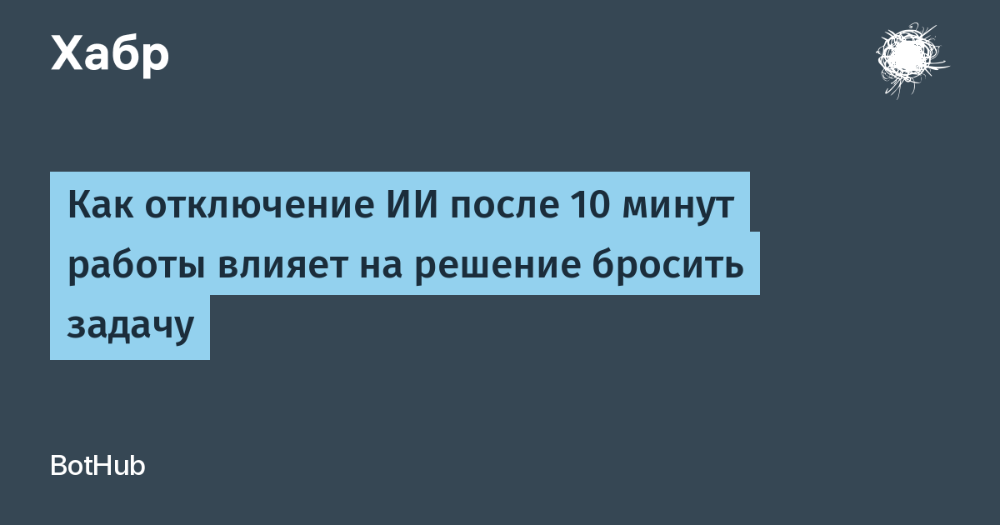

Работа «AI Assistance Reduces Persistence and Hurts Independent Performance» представлена на конференции Conference on Language Modeling (COLM 2026). Участники решали задачи на дроби и вопросы на понимание текста для подготовки к SAT. Часть из них могла держать ассистента в боковой панели — вплоть до готового ответа, — а затем доступ к помощнику убирали, и нужно было продолжать в одиночку. Контрольная группа всё это время работала без ИИ.
В первом эксперименте (354 участника) после отключения ИИ группа с ассистентом давала в среднем 57% правильных ответов против 73% у контрольной, а пропускала задания 20% против 11%. Во втором (667 человек) разрыв составил 71% против 77%, по числу отказов продолжения заметной разницы не было. В третьем, с текстами SAT (201 участник), — 76% против 89% правильных ответов и 8% пропусков против 1%. Пока помощник был доступен, он помогал отвечать верно; исчезал — и результативность вместе с настойчивостью падала.
Авторы объясняют эффект через понятие «продуктивного усилия»: человек привыкает к мгновенному ответу, и самостоятельный путь от затруднения к решению начинает казаться слишком дорогим. Важно, что спад настойчивости был сильнее у тех, кто просил у ИИ прямой ответ, чем у тех, кто брал подсказки, — то есть исход во многом зависит от режима работы с ассистентом, а не от самого факта его присутствия.
Выборки после отсева участников внимания становились меньше, второй эксперимент дал лишь слабую разницу, а инструменты и форматы задач были узкими. Вывод про учебные и рабочие сценарии выглядит тревожно, но это не приговор ИИ в целом, а аргумент в пользу того, чтобы осознанно дозировать мгновенные ответы и чаще просить подсказку, а не готовый ответ.